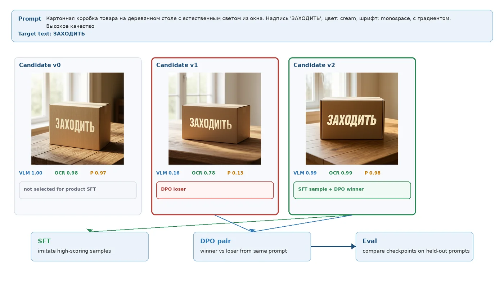
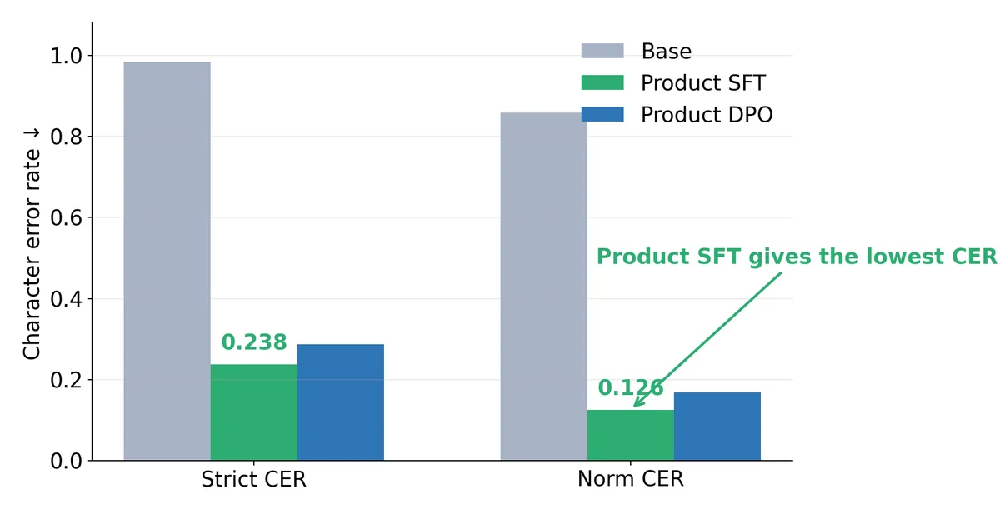
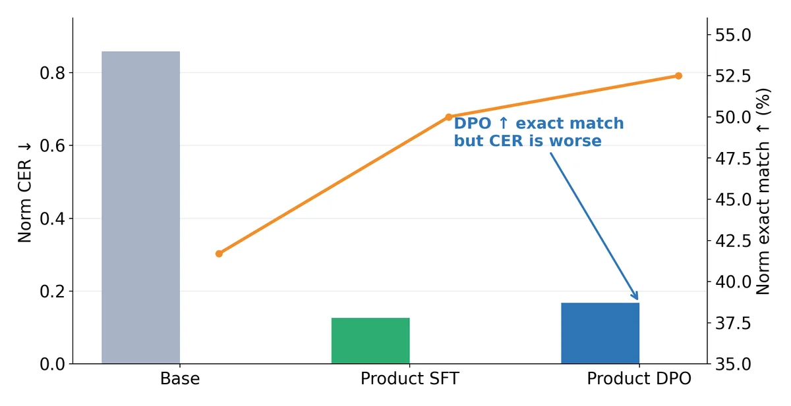
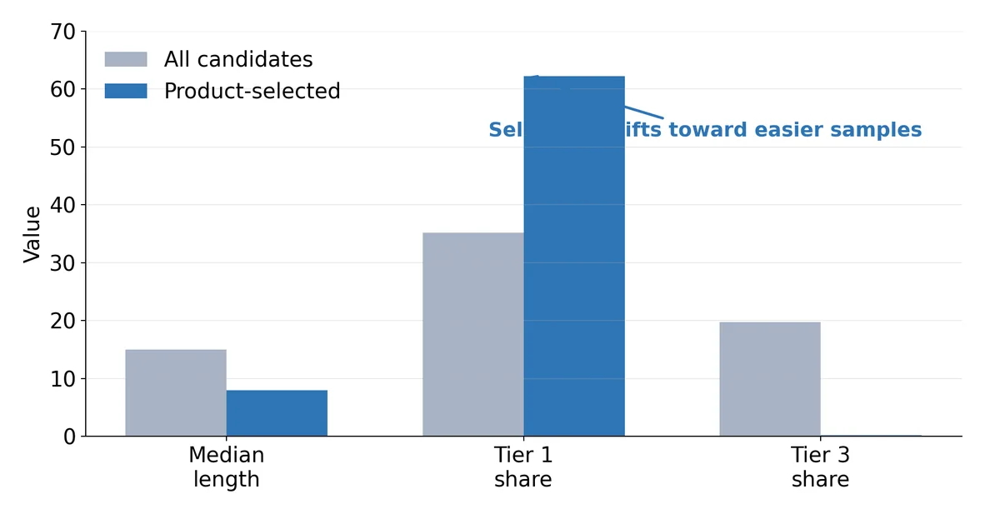
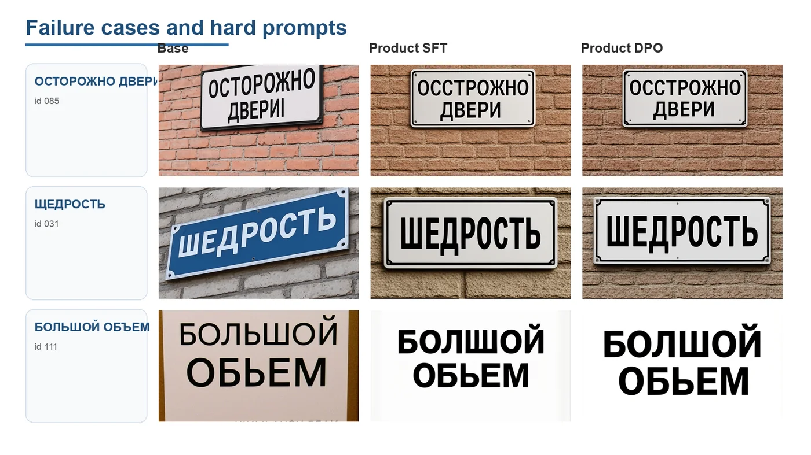

Reward-filtered self-training is the reliable route for Cyrillic text rendering
Adapting an open diffusion transformer to Russian/Cyrillic text rendering with generated candidates, automatic rewards, and LoRA fine-tuning.
Main idea
Reward-filtered generated-output self-training is the most reliable route in this setup. The base model already produces occasional successful Cyrillic renderings; the method turns those successes into supervised LoRA training data. DPO-style refinement is stable, but more fragile under noisy and off-policy preference pairs.
The practical constraint is simple: improve character-level control without full model retraining or manual image annotation.
Method
One prompt becomes several generated candidates. Each candidate is scored by a VLM judge, an OCR/CER reward, and their product. High-scoring images become self-training examples; best vs. worst scored variants become DPO-style preference pairs.

Reward formulas
Candidates are ranked with a VLM judge, an OCR/CER reward, and a conservative product reward. The product score is the selector used for the final demo checkpoint.
VLM yes-probability
RVLM = Σy∈YP(y) / (Σy∈YP(y) + Σn∈NP(n) + ε)
Yes/no token sets include English and Russian variants.
OCR character reward
ROCR = max(0, 1 − CER) · exp(−λ H̄)
CER measures target-string mismatch; CTC entropy penalizes uncertain reads.
Product reward
RP = RVLM · ROCR
High only when both the VLM judge and OCR evidence agree.
Held-out benchmark
A 120-prompt diagnostic benchmark was used in the final analysis. Each model generated one image per prompt under matched settings. Strict CER, homoglyph-normalized CER, exact match, OCR score, VLM score, product score, and script-mixing diagnostics were reported separately.
| Run | Strict CER ↓ | Norm. CER ↓ | Norm. exact ↑ | OCR ↑ | VLM ↑ | Product ↑ |
|---|---|---|---|---|---|---|
| Base | 0.984 | 0.859 | 41.7% | 0.560 | 0.658 | 0.392 |
| Product SFT | 0.238 | 0.126 | 50.0% | 0.635 | 0.681 | 0.444 |
| Product DPO | 0.287 | 0.168 | 52.5% | 0.639 | 0.704 | 0.470 |
Product DPO improves exact/VLM/product metrics but has worse CER than Product SFT. The safest qualitative demo checkpoint remains Product SFT.

DPO is mixed

DPO is stable, but its pair data is off-policy: pairs are base-generated, while the policy is initialized from SFT. This makes the preference signal less informative after self-training.
Product reward is biased

Product filtering is high precision, but it selects shorter and easier examples. Median target length drops from 15 to 8 characters, so product SFT is not proof that the product reward is universally best.
Remaining failures
The remaining errors are glyph-level: hard-sign ambiguity, visually similar Cyrillic letters, unstable Ё rendering, and occasional extra artifact text. Better coverage likely requires synthetic glyph supervision or a warm start trained on masks and known labels.

Reliable route
Base-generated candidates → automatic reward filtering → LoRA self-training.
Best demo model
Product-score SFT: strongest CER reduction and best qualitative balance.
DPO outcome
Stable but mixed under noisy/off-policy preferences; useful as a diagnostic stage.
Citation
@thesis{saparov2026cyrillic,
title = {Developing a Diffusion-based Training Toolkit for Multilingual Text Rendering},
author = {Saparov, Iakov},
school = {Innopolis University},
year = {2026}
}